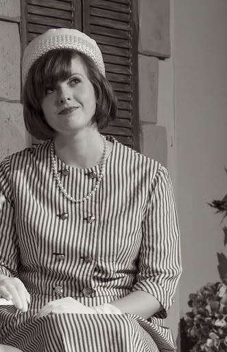
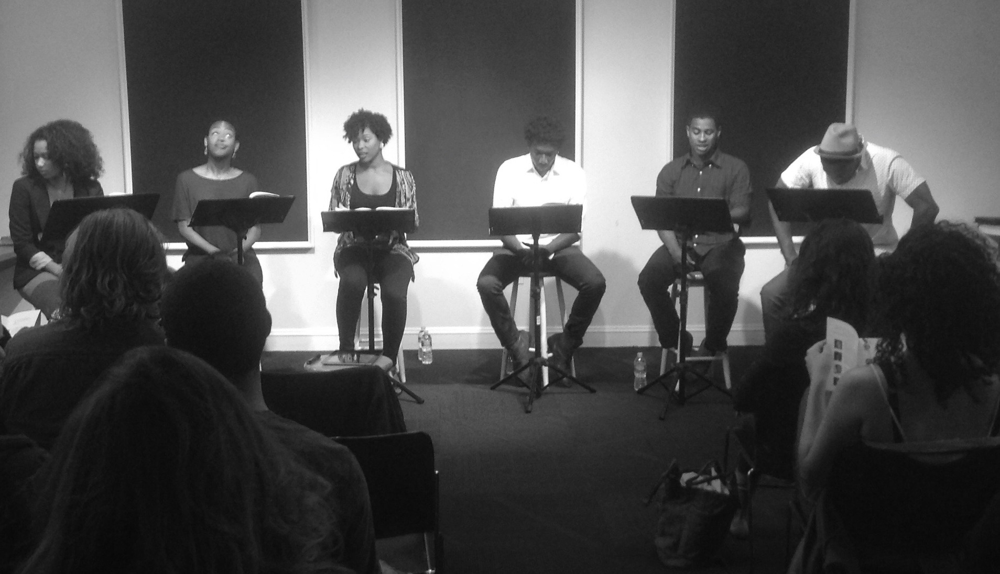
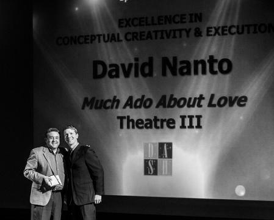
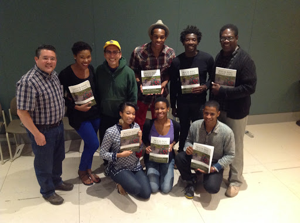

Peter
He is the natural leader of the three friends. He is good natured, handsome, and well liked. He also has a great sense of humor. He is serious about his idea to give up women and focus on his studies.
No one wrote more eloquently about love than William Shakespeare. He captured the heady emotion of falling in love and the angst of longing in a way that is as relevant today as it was 400 years ago.
Much Ado About Love is an entirely new play crafted using only Shakespeare's original verse. It gives the audience an opportunity to hear and enjoy the same Shakespeare we love but in a modern romantic comedy. Shakespeare aficionados will enjoy identifying lines from the over twenty-four plays and sonnets used in the script. And people new to Shakespeare will be surprised at how the language can be so approachable.
Anyone who loves a romantic comedy will fall head over heels for Much Ado About Love.
The Play
Three friends arrive at a small hotel in Italy where they swear an oath to avoid women and focus on their studies. Soon two beautiful cousins arrive and when the owner of the hotel suggests that they all do a reading of a play to pass the long evenings, it isn't long before the three men realize that they have fallen for the three women. But misunderstandings, shyness, and grief are almost insurmountable as the men try to woo the women of their dreams.
Incorporating beloved scenes and lines from Shakespeare's plays and sonnets, this romantic comedy proves that given the Bard's words, anyone has a chance at love.
Runtime: 2 hours with a 15 minute interval.
Delightfully familiar
and
Wonderfully new
The Cast
He is the natural leader of the three friends. He is good natured, handsome, and well liked. He also has a great sense of humor. He is serious about his idea to give up women and focus on his studies.
He is happy go lucky, full of confidence, and loves life. He is both handsome and charming. He has high energy and enthusiasm and a bit of pride.
He loves language and is incredibly articulate, except around women he falls for. He is likable and endearing in his awkwardness around women. He is wealthy and well-educated, and his friends turn to him for his intellectual strengths.
She is attractive, intelligent, and thoughtful. She comes across as reserved but very strong. However, when she allows herself, she can be vulnerable. Her grief stemming from the death of her father and brother is frequently just below the surface. She is focused on working through her grief, not on finding love.
She is attractive, funny, and full of energy. She is a natural comedienne, sweet, and likeable. She is also very sassy and strong willed. She can be dramatic. She is a romantic at heart and wants to find love.
The owner of the hotel. She is lovely and very approachable. She is outgoing, full of hospitality, and at ease with everyone, except men she is interested in. She is confident in how she runs her hotel but not in her personal relationships. She is someone that men often think of as a "friend".
Production History


Media


Contact
If you have questions about the play or about production rights, we'd love to hear from you.
davidnanto1@gmail.com
Creative Team
David is a member of the Dramatists Guild and is an advisor to the Intermission Theatre in London. He is the recipient of the 2014 EMACT Award for Excellence in Conceptual Creativity and Execution for Much Ado About Love's original production.
His short films have been screened at film festivals in London, Spain, Portugal, and the United States. His film Just Friends was named Official Selection in the Cinephone, International Mobil, Indiwise, and the IOWF Film Festivals.
David is also a corporate strategist with 30 years experience in international business strategy and a focus on Japan.
While still a film student at the Art Center College of Design in Pasadena, Calif., Kevin and his wife, Khaliel, founded The Young People’s Theatre. So, theatre has always been his passion. Kevin worked in advertising as a creative director at Ogilvy and Mather in New York City for nineteen years.
One of his favorite advertising campaigns that he wrote and produced for American Express included video portraits of Paul Newman and Meryl Streep that ran on the Super Bowl and the Academy Awards.
Kevin collaborated with Michael McLean on a musical called The Ark, which was selected for inclusion in the ASCAP Musical Theatre Workshop with Stephen Schwartz and later developed at the Festival of New Musicals sponsored by the National Alliance for Musical Theatre. As a result of the festival, Village Theatre in Issaquah, WA, further developed the show culminating in production of The Ark off-Broadway in the fall of 2006.